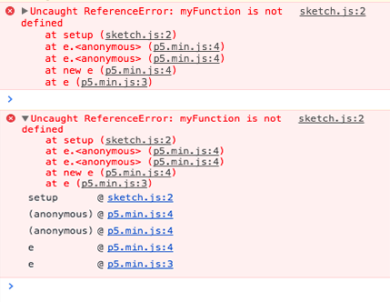
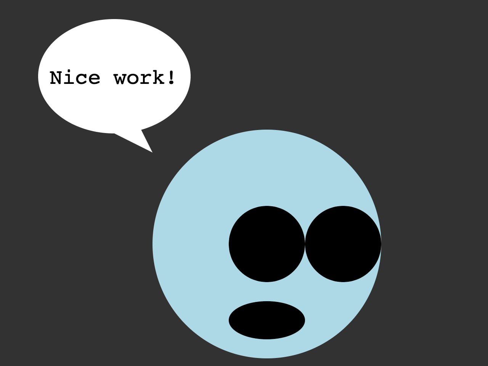

The term "computer bug" was coined by Grace Hopper in 1946, when she discovered that a computer program running on the Mark II machine had a moth trapped in an eletrical relay. The moth was trapped and preserved in the log book.
Generally, a bug is an error or flaw in a computer program that causes the execution to fail.
In JavaScript there are fewer fatal errors. The language is very forgiving of type errors and other things that would cause classical languages to fail.
However, JavaScript programs can fail, and when they do it can be difficult to understand why, in part because other elements of the HTML page, and even other JavaScripts scripts can continue to execture. The web page will still load, so we need to use debugging tools like the Chrome Developer console to find these errors.
Open the console now:
View > Developer > JavaScript Console
Mac:
CAj
Windows:
VSj
It's easy to create an error. Try typing this:
You will see some red text like this:
Uncaught ReferenceError: x is not defined at:1:1We haven't initalized x with a string or number value, so we can't add a number to it.
All programmers encounter bugs in their code and many will spend more time debugging then writing new code. It is a good idea to develop strategies for debugging as you learn programming to save time.
Finding a bug requires a different mindset than writing a program. Instead of writing what you want the computer to do, you need to go back through your code and figure out where it stopped doing what you thought it would.
0. Ask yourself:
What did I expect to happen?
What happened instead?
1. Check the console for error messages.
Bugs can be
Read the error and find the line in your sketch where the error happened.
Does the error make sense? What is it asking you to change?
2. If there's no error, test parts of your program.
If something is not running, add a console.log() before and after to see what happens. Test all of your variables in different parts of your program to make sure they are logging what you expect.
Log variables. Does that create an error or maybe log an undefined?
Log anything that you can think to log.
3. Research.
When you log errors that you don't understand, try searching the same error on Google or Stack Overflow. Remember that some parts of your program are not universal. If you error is mySpecialVariable is not defined you won't find other examples with the exact same variable names.
4. Ask a friend.
Once you have tried to figure out the problem on your own, ask a friend sitting near you, a tutor, or me. Sometimes someone who has never read your program before will immediately spot obvious problems that you have missed beacuse you've been staring at it for too long.
5. Take a break.
I can't tell you how many times I've spent like 3 hours debugging something late into the night while getting increasingly frustrated only to give up, go to bed, and wake up and immediately know what I was overlooking, or sit down and figure it out in five minutes.
Like many things in life, programming is best done when your mind is fresh.
Make sure you are
You should have the
When your code throws error, remember to look at the line number and read through the JavaScript function stack to find where the error originated.
The JavaScript console is an object that let's you interact with your program while it's running. The .log() method is used to write message with strings, numbers and variables, to the web console. You can log as much as you want, but it will impact performance a little, so it's a good idea to remove the console.log() calls from your program when you are done debugging.
| Error | What to look for |
|---|---|
| SyntaxError | syntactically invalid code look for a missing comma, operator, parenthesis |
| Reference Error | a non-existant variable is references check for misspelled or undeclared variables |
| Failed to load resource | attempting to load a file that doesn't exist make sure the file exists and has the correct path |
| NaN | trying to evaluate an expression with a non-number value console.log() to see what values are not numbers |
When you're done updating the code you're debug sketch should look like this.
